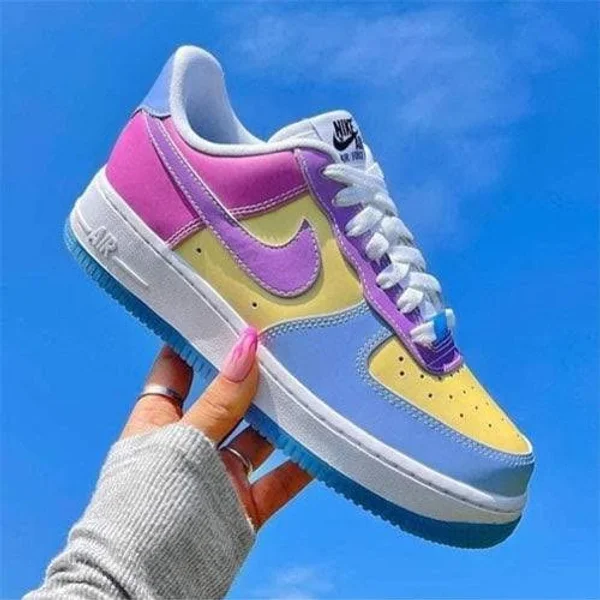

CASE STUDY BETWEEN GOOGLE LENS AND MOBILNET
test image-

OUTPUT ON GOOGLE LENS-
NIKE AIR FORCE SHOES
OUTPUT ON MOBILNET-
SHOES
result-
GOOGLE LENS IS MORE ACURATE
test image-
OUTPUT ON GOOGLE LENS-
BASKETBALL BT500
OUTPUT ON MOBILNET-
BASKETBALL
result-
BOTH IDENTIFIED SAME
test image-
OUTPUT ON GOOGLE LENS-
HARRY POTTER
OUTPUT ON MOBILNET-
TOY
result-
GOOGLE LENS IS MORE ACCURATE